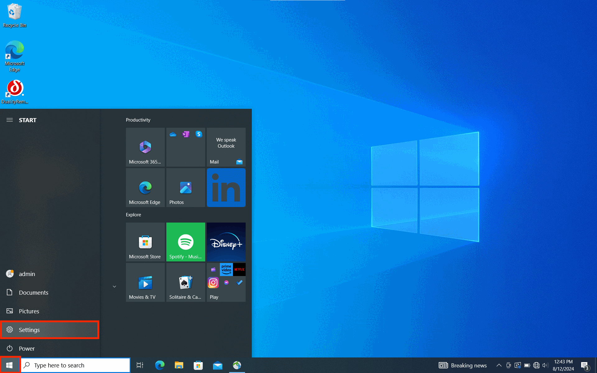
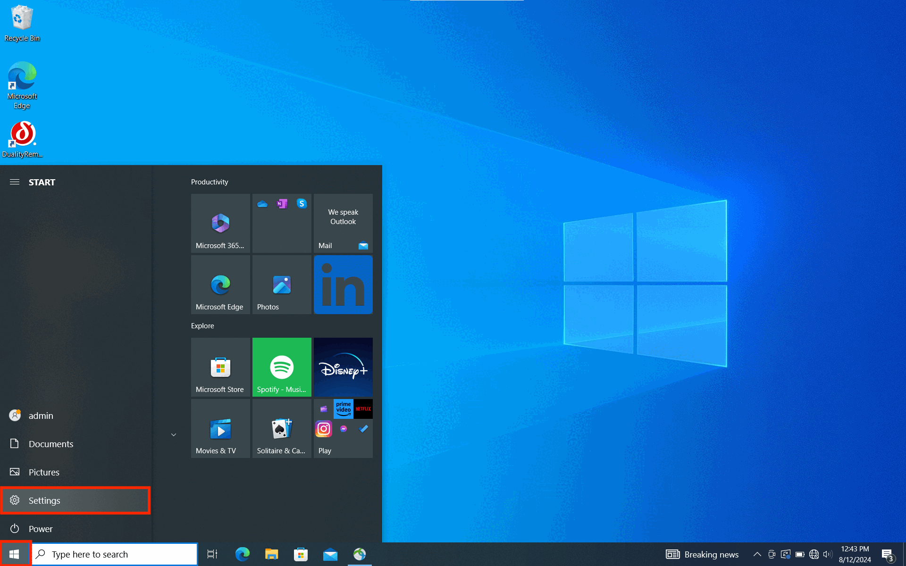

Room 777
Room PC Sound

- On the podium, there is a black box labeled Crestron. Press "POWER ON" on the top left.
- Press the button labeled "ROOM PC".
- The Volume Knob is located on the right side of the Crestron box. Make sure that at least one of the volume bars is lit up.
- On the room machine, click on the Control Center icon in the menu bar at the top right corner, under "Sound", ensure that "Crestron" is the selected device.
Troubleshooting: If you still don't have sound, make sure that neither EXT MIXER nor AUDIO MUTE have a red light beneath them on the Crestron box. If they do, press those buttons to deselect them.
Laptop Sound

- Plug the HDMI cable attached to the podium into your device.
- On the podium, there is a black box labeled "Crestron". Press "POWER ON" on the top left.
- Press the button labeled "LAPTOP".
- The Volume Knob is located on the right side of the Crestron box. Make sure that at least one of the volume bars is lit up.
- On the menu bar in the top right corner (if a MacBook), ensure that "Crestron" is the selected device (the circle to the left will be blue if so, click it if not).
Troubleshooting: If you still don't have sound, make sure that neither EXT MIXER nor AUDIO MUTE have a red light beneath them on the Crestron box. If they do, press those buttons to deselect them.
External Sound Source

- On the podium, there is a black box labeled Crestron. Press "POWER ON" on the top left.
- Press the button labeled "AUX AUDIO".
- Connect to the podium with the audio cable to the device (with adapters if needed).
- Turn the knob on the right of the Crestron box to adjust the volume.
- Make sure that at least one of the volume bars is lit up.
- Make sure that neither EXT MIXER nor AUDIO MUTE have a red light beneath them, or press the button to deselect those options.
- If using a MacBook: Click on the Control Center icon in the menu bar at the top right corner, under "Sound", ensure that "External Headphones" is the selected device (the circle to the left will be blue if so, click it if not).
- If using a Windows laptop: Click on the Speaker icon in the menu bar at the lower right corner, ensure that the device starting with "Headphones" is the selected device.
- When done, press "POWER OFF" on the Crestron box.
 
